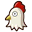
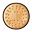
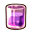
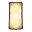
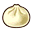
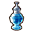

Food and Healing Items
Items that restore HP, MP and SP, or revive a fallen character.
How they work
- Potions and drinks work at once. Most food takes 0.5 to 1.5 seconds to eat.
- Some food restores a share of your maximum. For example,
 Curry restores 35% of your max HP.
Curry restores 35% of your max HP.
Potions
| Item | Restores | Where to buy |
|---|---|---|
| 300 HP |
|
|
| 300 MP |
|
|
| 300 SP |
|
|
| 550 HP |
|
|
| 550 MP | ||
| 550 SP | ||
| 850 HP | ||
| 1,050 HP | ||
| 1,050 MP | ||
| 1,050 SP |
Drinks and food from NPCs
| Item | Restores | Where to get |
|---|---|---|
| 250 HP, 100 MP, 100 SP |
|
|
| 100 SP |
|
|
| 150 SP |
|
|
| 250 HP, 150 SP | ||
| 340 HP, 200 SP | ||
| 150 MP |
|
|
| 15% of max HP | ||
| 10% of max HP |
|
|
| 10% of max MP |
|
|
| 10% of max SP |
|
|
 Teriyaki |
100 HP | |
| 15 HP |
|
|
| 30 HP |
Fighter and Spell User jobs can give the Orchard Lady only  Apple. Backpacker jobs can also use the other fruits.
Apple. Backpacker jobs can also use the other fruits.
Cooked food
Farmer jobs cook these with the  Cook skill (Job Level 12). A cooking NPC can also make them for a fee.
Cook skill (Job Level 12). A cooking NPC can also make them for a fee.
| Item | Cook level | Restores |
|---|---|---|
| 1 | 50 HP | |
| 1 | 100 HP | |
| 1 | 30 HP, 30 MP | |
 Biscuit |
1 | 70 MP |
| 1 | 150 MP | |
 Mix Juice |
1 | 250 HP, 100 SP |
 Calcium Biscuit |
2 | 100 MP |
| 2 | 25% of max HP | |
 Kitin Bread |
2 | 450 HP |
| 2 | 550 HP | |
| Caviar Bread | 2 | 550 HP, 350 MP |
| 3 | 35% of max HP | |
| 3 | 38% of max HP, 10% of max MP | |
| Jam | 3 | 250 HP, 150 MP |
| Cheese Bread | 3 | 550 HP, 300 MP |
| 3 | 750 HP, 600 SP | |
| 3 | 850 HP | |
| 3 | 2,300 HP | |
| 4 | 300 MP | |
| 4 | 100 MP, 100 SP | |
| 4 | 500 SP | |
| 4 | 1,150 HP | |
| 4 | 45% of max HP | |
| 4 | 2,500 HP | |
| Pizza(Magical 4 ECO) | 5 | 40% of max HP |
| 5 | 50% of max HP |
Reviving items
These items bring back a character who can't fight.  Resurrect Supplement takes 1.5 seconds to use. The potions work at once.
Resurrect Supplement takes 1.5 seconds to use. The potions work at once.

Condensed Resurrection Potion is used up when its durability runs out.| Item | Where to get |
|---|---|
Sold by:
Made with Chemical Preparation Lv 4 from:
|
|
Made with Chemical Preparation Lv 5 from:
Dropped by: |
|
| Condensed Resurrection Potion | Dropped by: |
These monsters drop  Resurrection Potion:
Resurrection Potion:
| Monster | Lv | Location |
|---|---|---|
| Angel Feather | 28 | |
| Dark Feather | 35 | |
| Arcana Heart | 40 | |
| Arcana Diamond | 40 | |
| Arcana Jack | 40 | |
| Solar Jerev | 40 | |
| Arcana Queen | 41 | |
| Luminous Feather | 54 | |
| Chaos Feather | 62 | |
| Toad King | 65 | |
| Sadma Snaky | 70 | |
| Advanced Orcus | 96 | |
| Demice | 115 | |
| Robe Night | 136 | |
| Shadow | 145 | |
| Doom Night | 148 | |
| Phantom | 160 |
Many D-Dungeon monsters of Lv 89 and above also drop it.